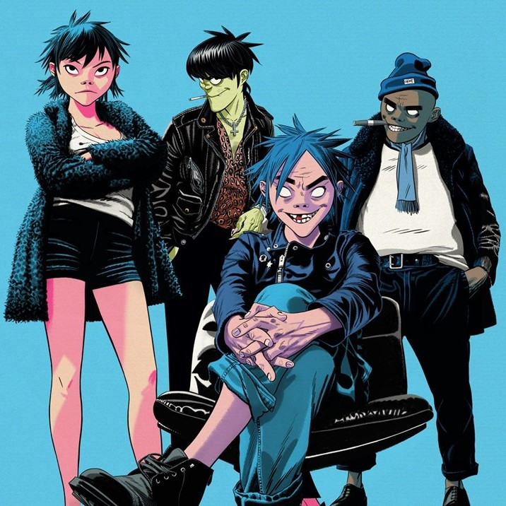
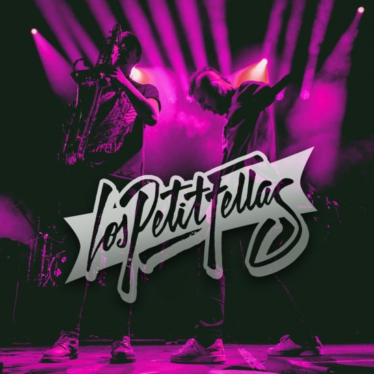
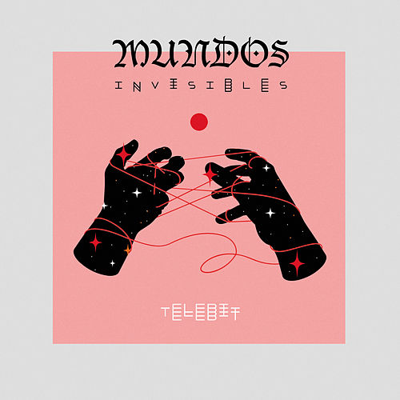
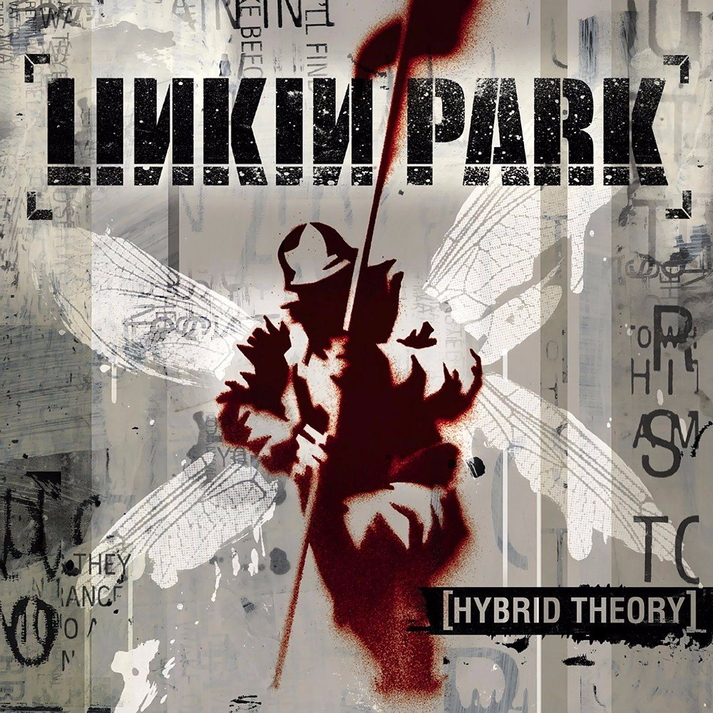
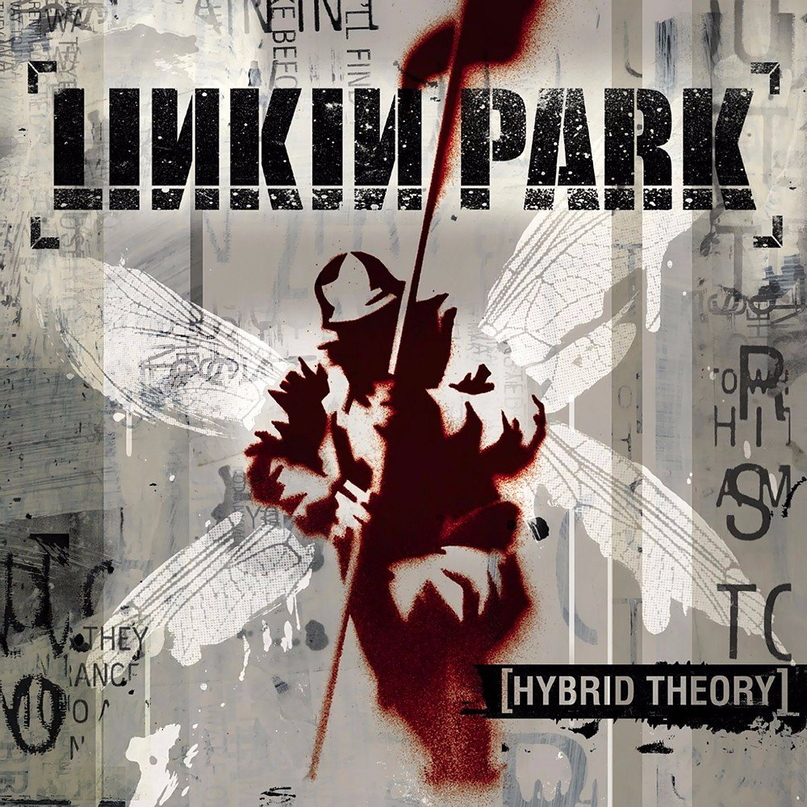

🐉 M Y __ W E B S I T E ㊙
¿Por que elegí esta carrera? ⚡
Desde simepre me han apasionado los videojuegos y el arte,
por lo que siempre quise aprender a programar y experimentar con
distintas herramientas
Hobbies ☕
En mi tiempo libre me gusta jugar Videojuegos, dibujar, tocar la guitarra,
escuchar musica, el baloncesto y las peliculas.
Mi Familia 🐶
Mi familia esta conformada por mis papas, mi hermana y mis 2 cachorras
Mis Peliculas favoritas 🎬
-
- Star Wars
- Es un universo de ficción creado por George Lucas, compuesta de películas, novelas, cómics,
videojuegos y juguetes.
Star Wars empezó en 1977, con el estreno de la primera entrega, Star wars: A New Hope.
Su trama describe las vivencias de un grupo de personajes que habitan en una galaxia ficticia e
interactúan con elementos como la Fuerza, un campo de energía metafísico y omnipresente8 que posee
un «lado luminoso» impulsado por la sabiduría, la nobleza y la justicia y utilizado por Jedi, y un
«lado oscuro» usado por los Sith y provocado por la ira, el miedo y el odio.
-
- The Secret Life of Walter Mitty
- Es la segunda adaptación cinematográfica del cuento The Secret Life of Walter Mitty publicado en
1939.
Se estrenó en el Festival de Cine de Nueva York el 5 de octubre de 2013, Fue filmada en Los Ángeles,
Nueva York, Islandia y Groenlandia.
-
- Mad Max: Fury Road
- Estrenada el 14 de mayo de 2015, la película esta ambientada en un futuro postapocalíptico. Es la
cuarta en la saga de Mad Max.
Después de que el planeta sufriera una sequía a escala global tras una guerra nuclear, el mundo se
ha convertido en una tierra desierta y la civilización se ha derrumbado por la guerra. Max
Rockatansky, un superviviente que habita en el desierto con su vehículo policial especialmente
adaptado para transportar más combustible.
-
- Ready Player One
- Es una película estadounidense de acción y ciencia ficción de 2018, producida y dirigida por Steven
Spielberg, escrita por Zak Penn y Ernest Cline y basada en la novela homónima de Cline.
La historia sigue los pasos del joven Wade Owen Watts, un jugador de videojuegos del año 2045 que,
como el resto de la humanidad, prefiere el metauniverso de realidad virtual OASIS al cada vez más
sombrío mundo real.
-
- Blade Runner 2049
- Es una película neo-noir y de ciencia ficción estadounidense dirigida por Denis Villeneuve,
estrenada en 2017 y escrita por Hampton Fancher y Michael Green. Es la continuación de Blade Runner
(1982) y segunda película de la franquicia homónima.
Ubicada treinta años después de la película original, la historia describe a un blade runner
replicante llamado K descubriendo los restos de una mujer replicante que en algún momento del pasado
estuvo embarazada, lo cual es aparentemente imposible. Para evitar una posible guerra entre humanos
y replicantes, K se encarga secretamente de encontrar al niño y destruir toda evidencia relacionada
con él.
-
- The Dirt
- The Dirt es una película biográfica estadounidense de drama y comedia, sobre la banda de Heavy
Metal/Glam Metal Mötley Crüe. Se estrenó en Netflix el 22 de marzo de 2019.
Directores 🎥
- George Lucas boton
- Ben stiller boton
- George Miller boton
- Steven Spielberg boton
- Denis Villeneuve boton
- Jeff Tremaine boton
ヾ(⌐■_■)ノ♪ Musica Favorita 👻



 

Poema 📓
Trata de salvar lo que valga la pena
y bota lo que ya no sirve,
botalo aunque te deuela...
Despreocupate por ti
y disfruta plenamente mientras puedas
por que lo unico seguro es que te mueras.
-canserbero.